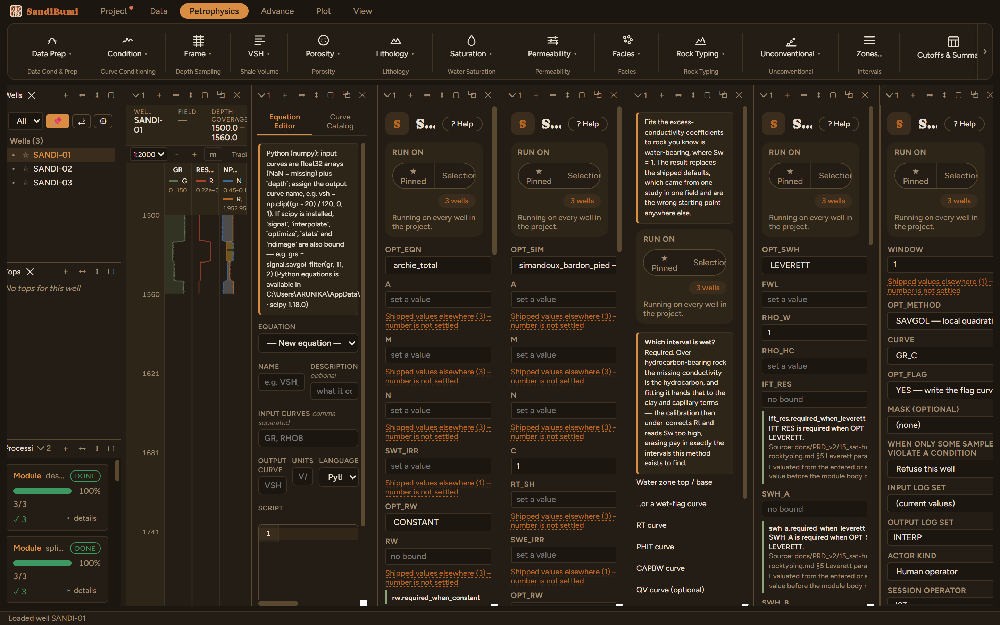

Averages a curve over a window stated as a thickness. A missing sample stays missing and no gap is bridged: smoothing never fills, because a filled sample is a claim about rock nobody logged.
MEAN: arithmetic mean of the live samples in the window MEDIAN: window median, which keeps a step edge where a mean would ramp across it SAVGOL: local quadratic least-squares fit on the real (depth, value) pairs, evaluated at the sample
Smooth averages a curve over a thickness window: MEAN, MEDIAN (which keeps a step edge where a mean would ramp across it), or SAVGOL, a local quadratic least-squares fit evaluated at each sample, fitted on the real (depth, value) pairs rather than the textbook fixed coefficients, which assume even sampling and are wrong on an irregular frame.
Despike first. A least-squares smoother fits whatever is in the window, so over an un-despiked curve it fits the spike: the spike is not removed, it is spread over the window and made to look like rock. This run therefore takes the despiked GR_C as its input, not raw GR.
SAVGOL over the same 1 m window as the despike step, output renamed GR_SM. Distinct conditioning steps get distinct names, so the provenance chain (GR → GR_C → GR_SM) reads in the Curve Catalog.

On these wells: 3 clean, 1185 samples out. One more contract worth knowing: a MISSING sample stays MISSING and no window bridges a gap. Smoothing never fills, because a filled sample is a claim about rock nobody logged. Fill Gaps does that job, and flags what it invents.
Everything below is generated from the same manifest the application builds this module’s pane from — descriptions, defaults, sources, ranges and pre-run checks here are exactly what the running application enforces.
Averages a curve over a WINDOW stated as a THICKNESS. **Despike first.** A least-squares smoother fits whatever is in the window, so over an un-despiked curve it fits the spike — the spike is not removed, it is spread over the window and made to look like rock. METHOD: • MEAN — arithmetic mean of the live samples in the window. • MEDIAN — window median; keeps a step edge where a mean would ramp across it. • SAVGOL — local quadratic least-squares fit evaluated at the sample. Fitted on the real (depth, value) pairs rather than with the textbook fixed coefficients, which assume even sampling and are wrong on an irregular frame. A MISSING sample stays MISSING and no window is bridged: smoothing does not fill gaps, because a filled sample is a claim about rock nobody logged. Use Fill Gaps, which marks what it invented.
| Role | Description | Resolves to | Required | Notes |
|---|---|---|---|---|
| CURVE | Curve to smooth | GR | yes | — |
Whole-well defaults; per-zone values from the Zones pane take precedence inside their zones (except where a parameter is marked one-value-per-well).
Smoothing window (thickness, centred)
conditioning_window); the pane lists them with sources at the point of choice.How the window is averaged
MEAN — arithmetic mean over the windowMEDIAN — window median, keeps step edgesSAVGOL — local quadratic fit (Savitzky-Golay)MEANWrite a flag curve marking every sample the smoother changed
YES — write the flag curveNO — the conditioned curve onlyYES| Name | Description |
|---|---|
| OUT_CURVE | Conditioned curve |
| OUT_FLAG | Changed-sample flag (flag: DIAGNOSTIC_INDICATOR) |